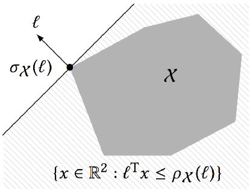

Polyhedral Approximations
In this section we review the mathematical notation and results from convex geometry that are used throughout LazySets.
Preliminaries
Let us introduce some notation. Let $\mathbb{I}_n$ be the identity matrix of dimension $n\times n$. For $p \geq 1$, the $p$-norm of an $n$-dimensional vector $x \in \mathbb{R}^n$ is denoted $\Vert x \Vert_p$.
Support Function
The support function is a basic notion for approximating convex sets. Let $\mathcal{X} \subset \mathbb{R}^n$ be a compact convex set. The support function of $\mathcal{X}$ is the function $\rho_\mathcal{X} : \mathbb{R}^n\to \mathbb{R}$, defined as
We recall the following elementary properties of the support function.
Proposition. For all compact convex sets $\mathcal{X}$, $\mathcal{Y}$ in $\mathbb{R}^n$, for all $n\times n$ real matrices $M$, all scalars $\lambda$, and all vectors $\ell \in \mathbb{R}^n$, we have:
Support Vector
The farthest points of $\mathcal{X}$ in the direction $\ell$ are the support vectors denoted $\sigma_\mathcal{X}(\ell)$. These points correspond to the optimal points for the support function, i.e.,
Since all support vectors in a given direction evaluate to the same value of the support function, we often speak of the support vector, where the choice of any support vector is implied.

Proposition 2. Under the same conditions as in Proposition 1, the following hold:
Polyhedral approximation of a convex set
The projection of a set into a low dimensional space (a special case of $M \mathcal{X}$) can be conveniently evaluated using support functions, since $\sigma_{M\mathcal{X}}(\ell) = \sigma_\mathcal{X}(M^T\ell)$. Moreover, for some classical convex sets such as unit balls in the infinity norm, in the $2$-norm, or polyhedra in constraint representation, the support functions can be efficiently computed. For example, the support function of the unit ball $\mathcal{B}_p^n$ is $\rho_{\mathcal{B}_p^n}(\ell) = \Vert{\ell}\Vert_{\frac{p}{p-1}}.$
Given directions $\ell_1,\ldots,\ell_m$, a tight overapproximation of $\mathcal{X}$ is the outer polyhedron given by the constraints
For instance, a bounding box involves evaluating the support function in $2n$ directions. To quantify this, we use the following distance measure.
A set $\mathcal{\hat{X}}$ is within Hausdorff distance $\varepsilon$ of $\mathcal{X}$ if and only if
The infimum $\varepsilon \geq 0$ that satisfies the above equation is called the Hausdorff distance between $\mathcal{X}$ and $\mathcal{\hat{X}}$ with respect to the $p$-norm, and is denoted $d_H^p\bigl(\mathcal{X},\mathcal{\hat{X}}\bigr)$.
Another useful characterization of the Hausdorff distance is the following. Let $\mathcal{X}, \mathcal{Y} \subset \mathbb{R}^n$ be polytopes. Then
In the special case $\mathcal{X} \subseteq \mathcal{Y}$, the absolute value can be removed.
By adding directions using Kamenev's algorithm (s. below), the outer polyhedron in (3) is within Hausdorff distance $\varepsilon \Vert{X}\Vert_p$ for $\mathcal{O}\left(\frac{1}{\varepsilon^{n-1}}\right)$ directions, and this bound is optimal. It follows that accurate outer polyhedral approximations are possible only in low dimensions. For $n=2$, the bound can be lowered to $\mathcal{O}\left(\frac{1}{\sqrt{\varepsilon}}\right)$ directions, which is particularly efficient and the reason why we chose to decompose the system into subsystems of dimension 2.
Kamenev's algorithm
An overapproximation of the projections of a polyhedron given in constraint form can be obtained using Kamenev's algorithm; this is a particularly effective algorithm in two dimensions. Kamenev's algorithm proceeds as follows. Starting with at least $n$ linearly independent template directions, compute an outer approximation. From the corresponding support vectors, compute an inner approximation, as the convex hull of the support vectors. Now compute the facet normals of the inner approximation, and the distance between the facets of the inner and the vertices of the outer approximation. Finally, pick the facet normal with the largest distance, and add it to the template directions. This procedure is repeated until the distance is smaller than the desired error.
For more details we refer to
Kamenev, G. K. (1996). An algorithm for approximating polyhedra. Computational Mathematics and Mathematical Physics, 36(4), 533–544,